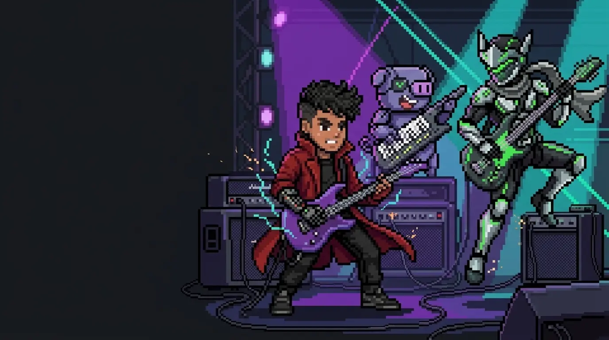

Latest build / September 2026
Windows CI build and DSP checks passing
HyperWumpus Guitar Rig
I wanted to play guitar, didn’t have an amp ready, and wondered whether I could build one. That spontaneous question became a working C++ and JUCE audio prototype for my Scarlett 2i2.
The source includes real-time DSP, ASIO device handling, automated tests, a hardware validation plan, and an honest roadmap toward a useful streaming rig.
Prototype status: automated Windows build and DSP tests pass. Physical Scarlett, listening, latency, and OBS tests remain in progress.
